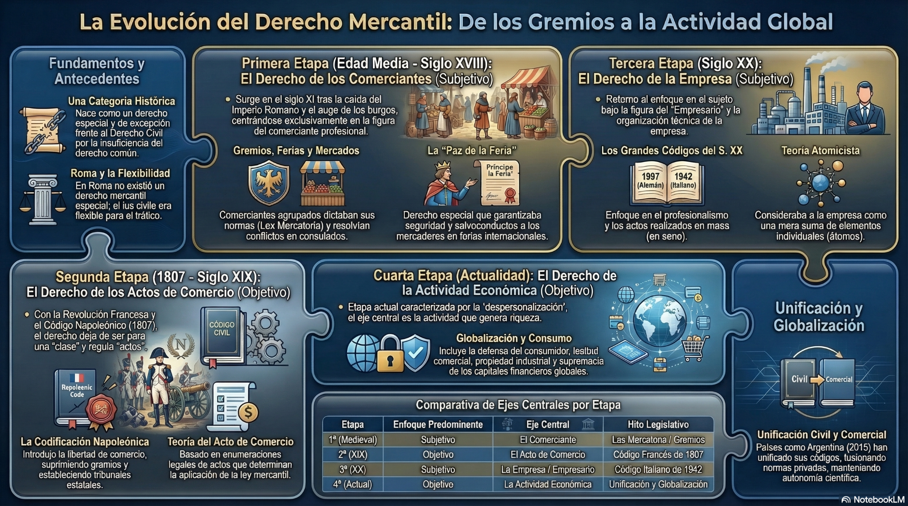
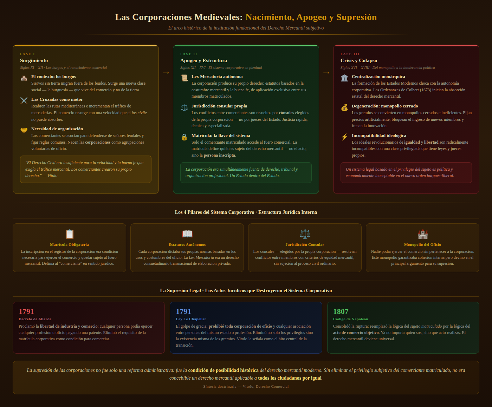

Clase 1 · Evolución y configuración actual del Derecho Comercial
Universidad Nacional de Moreno
Existía un:
Vamos a intentar responder tres preguntas:
El Derecho Comercial no puede comprenderse al margen de la evolución de la actividad económica.
Organización de la actividad económica.
Instrumentos jurídicos del intercambio.
Espacio de interacción y regulación.
Favier Dubois, Manual de Derecho Comercial, cap. 1.
La empresa aparece como una organización destinada al desarrollo de actividades de producción o intercambio de bienes y servicios.
Su regulación comprende, entre otros aspectos:
Los negocios permiten jurídicamente:
El mercado tampoco funciona al margen del Derecho.
El ordenamiento establece reglas sobre:
Favier Dubois, Manual de Derecho Comercial, cap. 1.
La actividad económica necesita:
Pero facilitar la actividad económica no significa permitir cualquier conducta.
El Derecho también impone:
para desarrollar actividades económicas
para proteger intereses jurídicamente relevantes

Abrir Genially · Etapas del Derecho Comercial
El recurso repasa visualmente:
El Derecho Comercial surge históricamente vinculado a quienes ejercían profesionalmente el comercio.
No era un derecho general.
Era un derecho:
Vítolo, Manual de Derecho Comercial, cap. I.
La actividad mercantil tenía necesidades particulares:
Con el desarrollo del comercio adquieren especial importancia:
En las ferias se encontraban comerciantes provenientes de distintos territorios.
Cada uno podía estar sometido a:
Las prácticas reiteradas de los comerciantes fueron generando reglas propias.
Esas reglas respondían directamente a las necesidades del tráfico.
Los comerciantes comenzaron a organizarse en corporaciones profesionales.
Estas organizaciones:
Los conflictos entre comerciantes podían ser resueltos por órganos vinculados a las propias corporaciones.
Esto permitía:
Si era comerciante, resultaba aplicable el Derecho Mercantil.
El centro del sistema era:
Por eso se habla de una concepción subjetiva del Derecho Comercial.
El Derecho Mercantil podía concebirse como:
un derecho especial aplicable a quienes ejercían profesionalmente el comercio.
Vítolo, Manual de Derecho Comercial, cap. I.
¿Qué ocurre cuando interviene una persona que no pertenece a la categoría de comerciante?
Por ejemplo:

Entre los siglos XVIII y XIX aparecen nuevas ideas políticas y jurídicas.
La Revolución Francesa cuestiona:
La condición profesional deja de ser suficiente para delimitar un derecho especial.
Antes:
Ahora:
Determinados actos pasan a ser considerados comerciales.
La aplicación del Derecho Comercial comienza a depender de la naturaleza del acto.
Comerciante
Acto de comercio
El Código francés de 1807 constituye un momento decisivo.
La materia mercantil comienza a estructurarse alrededor de los:
Vítolo, Manual de Derecho Comercial, cap. I.
Una persona podía quedar alcanzada por reglas comerciales:
si realizaba determinados actos considerados comerciales.
| Concepción subjetiva | Concepción objetiva |
|---|---|
| Comerciante | Acto de comercio |
| Importa el sujeto | Importa el acto |
| Derecho profesional | Derecho de determinados actos |
Una persona compra mercadería habitualmente para revenderla.
Otra vende por única vez un mueble de su casa.
La concepción objetiva tuvo enorme influencia durante el siglo XIX.
También influyó decisivamente en:
Durante gran parte de nuestra historia coexistieron:
y
La existencia de dos códigos obligaba a determinar:
La respuesta podía modificar el régimen aplicable.
El sistema necesitaba un criterio para distinguir ambas esferas.
El acto de comercio cumplía esa función delimitadora.
Durante los siglos XIX y XX aparece una transformación decisiva:
El acto de comercio observa fundamentalmente:
Pero la economía moderna muestra algo diferente:
Ya no interesa solamente observar actos aislados.
Comienza a resultar relevante:
Operación individual.
Conjunto organizado y continuado de actos.
La empresa combina distintos elementos:
¿Quién actúa?
↓
¿Qué acto realiza?
↓
¿Qué actividad económica organizada desarrolla?
Vítolo identifica a la empresa como elemento central de la concepción moderna del Derecho Comercial.
La transformación económica obliga a superar una visión construida exclusivamente sobre actos aislados.
Vítolo, Manual de Derecho Comercial, cap. I.
Una persona humana puede organizar una empresa.
Una sociedad es una estructura jurídica que puede utilizarse para desarrollar una actividad empresarial.
Durante el siglo XX, la realidad comercial fue progresivamente desbordando al Código de Comercio.
Muchas instituciones comenzaron a regularse mediante:
Antes de su derogación, buena parte del Derecho Comercial argentino:
La Ley 26.994 produce una transformación fundamental del Derecho Privado argentino.
Del nuevo Código desaparecen como categorías generales:
Y se deroga el Código de Comercio.
La desaparición de esas categorías no implica la desaparición de la materia comercial.
La realidad económica que requiere regulación especial:
Ya no necesitamos identificar al Derecho Comercial exclusivamente mediante:
Podemos observar:
| Etapa | Centro |
|---|---|
| Derecho mercantil medieval | Comerciante |
| Codificación | Acto de comercio |
| Economía industrial | Empresa |
| Derecho Comercial contemporáneo | Empresa + negocios + mercado |
La unificación legislativa no implica necesariamente:
Una cosa es:
Otra cosa es:
Existe una relación estrecha.
Pero no una identidad absoluta.
Se ocupa principalmente de relaciones jurídicas vinculadas con:
Presenta una mirada más amplia sobre la ordenación jurídica de la economía.
Incluye:
Para Favier Dubois, ambas disciplinas observan conductas humanas desde perspectivas distintas.
Analiza:
Establece:
Las normas jurídicas:
Y las transformaciones económicas:
Una corriente relevante propone analizar las normas a partir de cuestiones como:
Favier Dubois advierte contra una identificación absoluta entre:
y
La eficiencia puede ser relevante.
Pero también lo son:
Una regulación protege fuertemente al consumidor pero incrementa los costos de las empresas.
La actividad comercial presenta una característica histórica:
Una persona ubicada en Argentina:
Las ferias medievales planteaban una dificultad:
comerciantes de diferentes territorios necesitaban reglas comunes.
La economía global vuelve a plantear:
operaciones que superan las fronteras estatales.
Una de las respuestas estatales frente a la internacionalización consiste en:
En nuestro ámbito:
La integración económica genera necesidades de:
El Derecho Comercial deja de ser exclusivamente:
y adquiere una dimensión:
Las relaciones comerciales también desarrollan mecanismos específicos para resolver conflictos.
Uno de ellos ocupa un lugar central:
Las partes pueden acordar someter determinadas controversias a árbitros.
Su relevancia se vincula con:
La jurisdicción mercantil medieval y el arbitraje contemporáneo pertenecen a contextos muy diferentes.
Pero ambos responden a una preocupación histórica:
Habíamos preguntado:
Porque siguen existiendo:
y continúan generando necesidades jurídicas particulares.
El Derecho Comercial existió antes de los grandes códigos.
Y continúa existiendo después de la derogación del Código de Comercio argentino.
↓
↓
↓
Una persona comienza a fabricar muebles en su casa.
Con el tiempo:
o
Favier Dubois, Eduardo M. (dir.)
Manual de Derecho Comercial, 2016.
Primera Parte, Capítulo 1.
Vítolo, Daniel Roque
Manual de Derecho Comercial.
Capítulo I: “El Derecho Comercial o Mercantil”.